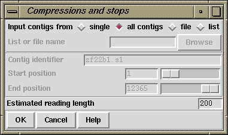

This option (which is available from the gap4 Experiments menu) searches through a region of a contig looking for stop (STOP) or compression (COMP) tags. These tags could have been added using the Contig Editor or by a suitable external program which can analyse traces to detect these types of problems. For each such tag found the routine produces a list of readings that could be resequenced to try to solve the problem. Obviously the types of experiments available will change as the technology improves but at present the program produces output that suggests "Taq terminator" experiments. We welcome suggestions for other experiment types or news of any programs that can automatically assign the tags. The results, in the form of suggestions, are written to the Output window.

Note that the Taq reading length is used as a guideline for deciding which readings are suitable candidates for solving a problem. All readings in the correct orientation and with their 5' ends within this length are assumed to solve the problem. The actual distance is listed in the output; an example of this is shown below.
Prob 1544..1545: COMP tag on strand 0 (forward)
Taq for xd26d8.s1 1365 179
Prob 1554..1554: STOP tag on strand 0 (forward)
Taq for xd26d8.s1 1365 189
Prob 5276..5288: COMP tag on strand 1 (reverse)
Taq for xc34g11.s1 5299 23
Taq for xc34g11.s1t 5298 22
Taq for xc34d6.s1 5316 40
Taq for xc45e1.s1 5463 187
Prob 24042..24046: COMP tag on strand 1 (reverse)
Taq for xc50a12.s1 24167 125
Taq for xc33d1.s1 24188 146
Taq for xc36h4.s1 24208 166
Taq for xc51c8.s1 24232 190
The format of the above output is:
Prob <start>..<end>: <type> tag on strand <st>
Taq for <read> @ <pos> <distance>
...
Where:
<start>..<end>
<type>
<st>
<read>
<pos>
<distance>